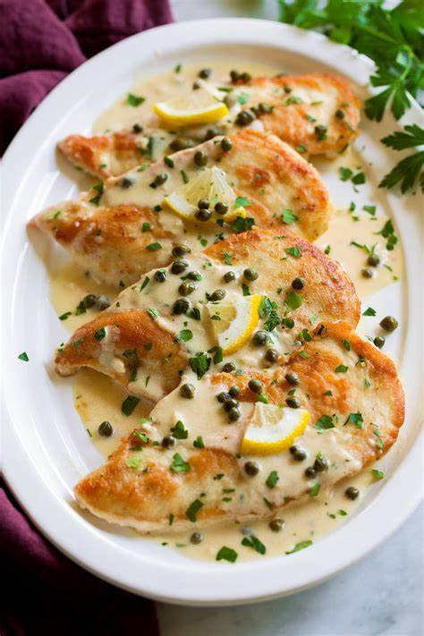

Home
Chicken Piccata

Chicken breasts are lightly browned and simmered in a bright lemon caper white wine sauce. Serve over pasta or with crusty bread.
Ingredients
- 4 boneless skinless chicken breasts
- 1/2 cup all-purpose flour
- 1 teaspons lemon zest
- 2 tablespoons olive oil
- salt and black pepper to taste
Sauce
- 1/4 cup salted butter
- 1 1/2 tablespoons all-purpose flour
- 1 cup chicken broth
- 1/2 fresh lemon juice
- 1/2 cup dry white wine
- 3 tablespoons capers
- 2 tablespoons chopped fresh parsley
- shredded Parmesan cheese
Steps
- Using a meat mallet, gently pound each chicken breast to ½-inch thick. See notes for larger chicken breasts.
- Combine the all-purpose flour, lemon zest, salt, and pepper in a shallow bowl. Dip each chicken breast in the flour mixture, shaking off any excess.
- In a 10-inch skillet, heat the olive oil over medium-high heat. Cook the chicken in two batches for 4 to 5 minutes per side or until lightly browned and cooked through (165°F). Remove from the skillet and set aside to keep warm.
- Reduce the heat to medium and melt the butter in the same skillet. Whisk in the flour, scraping up any brown bits, and cook for 2 minutes.
- Gradually add the chicken broth, whisking until smooth after each addition.
- Add lemon juice, white wine, and capers. Simmer for 3 minutes, whisking occasionally.
- Add the chicken back into the skillet, and simmer in the sauce for 2 to 3 minutes or until heated through. Season with salt and pepper to taste.
- Stir in the chopped parsley and serve.